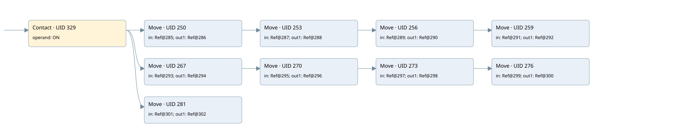

reset all flag allarms
startup only · 검색 색인 순서 3 · 원본 내부 NID 추정 None
백업 PLF 원본의 2636397 바이트 위치에서 복원한 XML. 검색 문서 403의 객체 키 16102200640f000000000000와 연결했다. 이름 해석 1/19개. 남은 RefId는 상수 또는 미해석 참조다.
연결 구조 다시 그리기
원본 Part/PCon/Wire를 이용한 연결도다. TIA 화면의 래더 배치 또는 실행 결과를 재현한 그림은 아니다. 핀 연결은 아래 표와 원본 XML을 기준으로 읽는다. 노드 위에 마우스를 두면 피연산자 이름을 볼 수 있다.

접점·코일·블록과 피연산자
| Part UID | Gate | Negated 핀 | 연결 피연산자 |
|---|---|---|---|
| 329 | Contact | operand = ON | |
| 250 | Move | in = RefId 54 / ORef UID 285; out1 = RefId 24 / ORef UID 286 | |
| 253 | Move | in = RefId 54 / ORef UID 287; out1 = RefId 26 / ORef UID 288 | |
| 256 | Move | in = RefId 54 / ORef UID 289; out1 = RefId 28 / ORef UID 290 | |
| 259 | Move | in = RefId 54 / ORef UID 291; out1 = RefId 30 / ORef UID 292 | |
| 267 | Move | in = RefId 54 / ORef UID 293; out1 = RefId 32 / ORef UID 294 | |
| 270 | Move | in = RefId 54 / ORef UID 295; out1 = RefId 34 / ORef UID 296 | |
| 273 | Move | in = RefId 54 / ORef UID 297; out1 = RefId 36 / ORef UID 298 | |
| 276 | Move | in = RefId 54 / ORef UID 299; out1 = RefId 38 / ORef UID 300 | |
| 281 | Move | in = RefId 54 / ORef UID 301; out1 = RefId 40 / ORef UID 302 |
접점 경로를 펼친 조건식
Contact·O/A·비교기의 원본 연결을 읽기 쉽게 펼친 보조 해석이다. POWER는 전원 레일 시작을 뜻한다. 호출 블록·에지·타이머의 내부 동작과 다중 쓰기 순서는 이 표로 실행 검증하지 않았다. 미해석 핀과 RefId는 원문 연결표에서 확인한다.
| UID | 동작 | 대상 | 원본 접점 경로 | 내용 |
|---|---|---|---|---|
| 250 | Move | ORef UID 286 | ON | Move 입력 ORef UID 285 |
| 253 | Move | ORef UID 288 | Move UID 250.eno (블록 동작 확인) | Move 입력 ORef UID 287 |
| 256 | Move | ORef UID 290 | Move UID 253.eno (블록 동작 확인) | Move 입력 ORef UID 289 |
| 259 | Move | ORef UID 292 | Move UID 256.eno (블록 동작 확인) | Move 입력 ORef UID 291 |
| 267 | Move | ORef UID 294 | ON | Move 입력 ORef UID 293 |
| 270 | Move | ORef UID 296 | Move UID 267.eno (블록 동작 확인) | Move 입력 ORef UID 295 |
| 273 | Move | ORef UID 298 | Move UID 270.eno (블록 동작 확인) | Move 입력 ORef UID 297 |
| 276 | Move | ORef UID 300 | Move UID 273.eno (블록 동작 확인) | Move 입력 ORef UID 299 |
| 281 | Move | ORef UID 302 | ON | Move 입력 ORef UID 301 |
원본 배선 연결
| Wire UID | 동일 Wire 연결 끝점 |
|---|---|
| 331 | Powerrail {} ↔ Part 329.in |
| 303 | ORef 284 (ON) ↔ Part 329.operand |
| 330 | Part 329.out ↔ Part 250.en ↔ Part 267.en ↔ Part 281.en |
| 304 | ORef 285 (RefId 54) ↔ Part 250.in |
| 306 | Part 250.eno ↔ Part 253.en |
| 305 | Part 250.out1 ↔ ORef 286 (RefId 24) |
| 307 | ORef 287 (RefId 54) ↔ Part 253.in |
| 309 | Part 253.eno ↔ Part 256.en |
| 308 | Part 253.out1 ↔ ORef 288 (RefId 26) |
| 310 | ORef 289 (RefId 54) ↔ Part 256.in |
| 312 | Part 256.eno ↔ Part 259.en |
| 311 | Part 256.out1 ↔ ORef 290 (RefId 28) |
| 313 | ORef 291 (RefId 54) ↔ Part 259.in |
| 314 | Part 259.out1 ↔ ORef 292 (RefId 30) |
| 315 | ORef 293 (RefId 54) ↔ Part 267.in |
| 317 | Part 267.eno ↔ Part 270.en |
| 316 | Part 267.out1 ↔ ORef 294 (RefId 32) |
| 318 | ORef 295 (RefId 54) ↔ Part 270.in |
| 320 | Part 270.eno ↔ Part 273.en |
| 319 | Part 270.out1 ↔ ORef 296 (RefId 34) |
| 321 | ORef 297 (RefId 54) ↔ Part 273.in |
| 323 | Part 273.eno ↔ Part 276.en |
| 322 | Part 273.out1 ↔ ORef 298 (RefId 36) |
| 324 | ORef 299 (RefId 54) ↔ Part 276.in |
| 325 | Part 276.out1 ↔ ORef 300 (RefId 38) |
| 326 | ORef 301 (RefId 54) ↔ Part 281.in |
| 327 | Part 281.out1 ↔ ORef 302 (RefId 40) |
식별자 해석 근거 19개
| ORef UID | RefId | 이름 | IdentXmlPart 파일 | 해석 방법 |
|---|---|---|---|---|
| 284 | 1 | ON | 0047-IdentXmlPart.xml, 0664-IdentXmlPart.xml | UID/RID + search-text + NID agreement |
| 285 | 54 | 미해석 RefId | 식별 선언 원본 참조 | 미해석 |
| 286 | 24 | 미해석 RefId | 식별 선언 원본 참조 | 미해석 |
| 287 | 54 | 미해석 RefId | 식별 선언 원본 참조 | 미해석 |
| 288 | 26 | 미해석 RefId | 식별 선언 원본 참조 | 미해석 |
| 289 | 54 | 미해석 RefId | 식별 선언 원본 참조 | 미해석 |
| 290 | 28 | 미해석 RefId | 식별 선언 원본 참조 | 미해석 |
| 291 | 54 | 미해석 RefId | 식별 선언 원본 참조 | 미해석 |
| 292 | 30 | 미해석 RefId | 식별 선언 원본 참조 | 미해석 |
| 293 | 54 | 미해석 RefId | 식별 선언 원본 참조 | 미해석 |
| 294 | 32 | 미해석 RefId | 식별 선언 원본 참조 | 미해석 |
| 295 | 54 | 미해석 RefId | 식별 선언 원본 참조 | 미해석 |
| 296 | 34 | 미해석 RefId | 식별 선언 원본 참조 | 미해석 |
| 297 | 54 | 미해석 RefId | 식별 선언 원본 참조 | 미해석 |
| 298 | 36 | 미해석 RefId | 식별 선언 원본 참조 | 미해석 |
| 299 | 54 | 미해석 RefId | 식별 선언 원본 참조 | 미해석 |
| 300 | 38 | 미해석 RefId | 식별 선언 원본 참조 | 미해석 |
| 301 | 54 | 미해석 RefId | 식별 선언 원본 참조 | 미해석 |
| 302 | 40 | 미해석 RefId | 식별 선언 원본 참조 | 미해석 |
검색 코드 보조 자료
참조 명칭을 찾기 위한 자료이며 실행 순서나 AND/OR 관계는 위 연결표로 확인한다.
"on" move int#0 move int#0 move int#0 move int#0 move int#0 move int#0 move int#0 move int#0 %db3.dbw8 %db3.dbw10 %db3.dbw12 %db3.dbw14 move int#0 %db3.dbw16 %db3.dbw0 %db3.dbw2 %db3.dbw4 %db3.dbw6